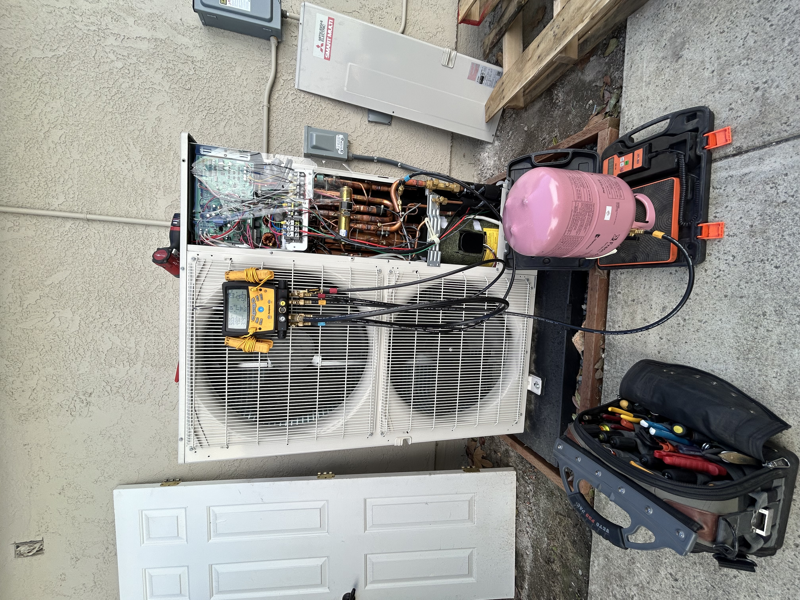
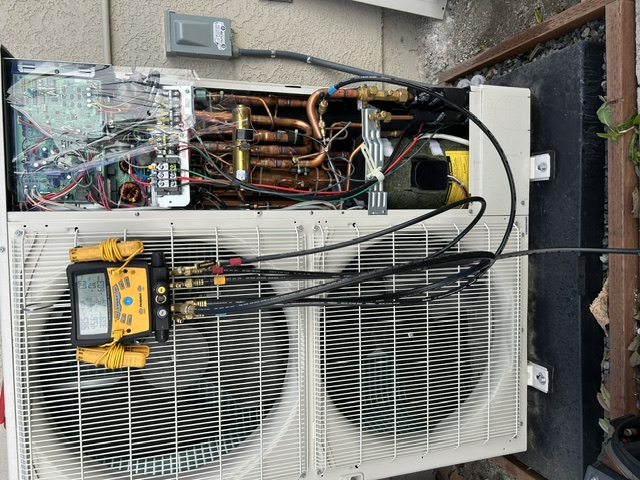
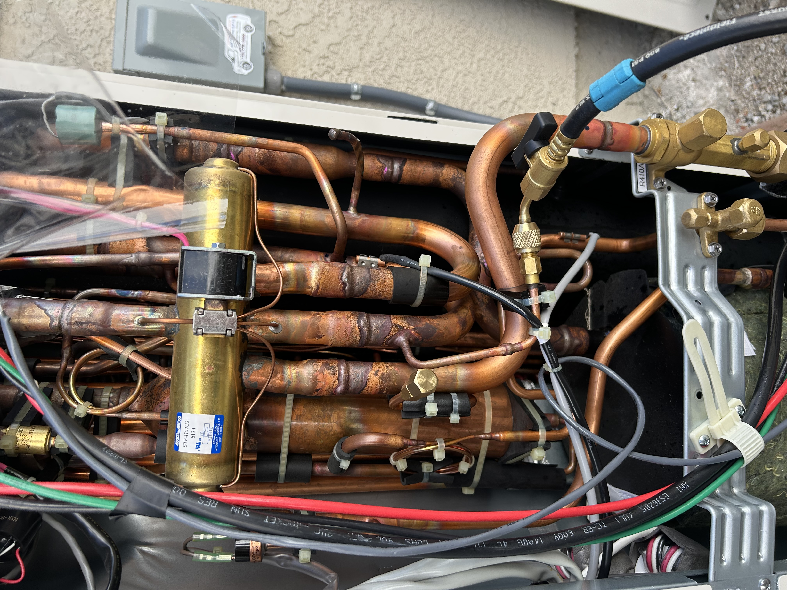
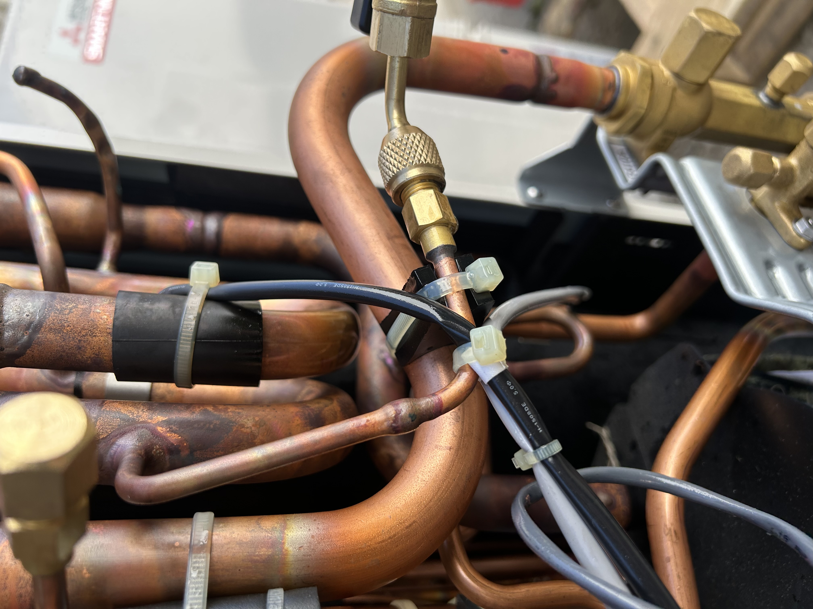

What you're looking at
Mitsubishi's Smart Multi outdoor unit exposes three Schrader-style service ports inside the right-hand service panel — and at a glance they look interchangeable. They're not.
- Suction (low side) service valve port — on the stop-valve body for the larger gas line. For service access: low-side gauge readings, recovery, pressure tests. Not the charging port.
- Liquid line service valve port — on the stop-valve body for the smaller liquid line. Same role: service access for high-side gauge readings, recovery, pressure tests. Not the charging port.
- Center port on the reversing valve — deeper in the chassis, on the brass 4-way body. This is the intended charging port. Charge here. Every time.
Why the reversing valve port
The Smart Multi is a multi-branch system: one outdoor condenser, multiple indoor heads, EEVs at every branch, an internal accumulator, and a reversing valve that flips the entire circuit between heat and cool. Where you introduce charge into that loop matters.
- Refrigerant distribution. The reversing-valve port sits on the common refrigerant path between the compressor and the indoor branches. Charge added here gets distributed by the system's own logic — through the accumulator, past the EEVs, into the branches that are actually calling. Charge through a stop-valve service port and you're injecting into one leg of the circuit, which a multi-branch system isn't expecting.
- Gauge readings stay honest. When you charge through the same port you're reading from, the act of pushing refrigerant into the system makes that line's number jump every time you crack the bottle. Center port keeps your low-side and liquid-line readings clean while you charge — they measure what the system actually sees, not what you just shoved at it.
- EEV behavior. Inverter Mitsubishi systems modulate EEVs based on what they sense at the indoor coils. Dump liquid charge straight at one EEV through a stop-valve port and you can get it to hunt, throw an L5 / U2 / U3, or run the compressor on a wet suction line until it stops.
- It's what the IOM says. Mitsubishi's Smart Multi service manual specifies the reversing-valve service port as the charging port. The two stop-valve ports are documented as pressure-check / recovery points. If a warranty claim ever comes back at you, the IOM is the document that wins.
The procedure
- Get the DSB charge number. Run the install through Diamond System Builder for the actual outdoor unit + indoor combination + line-set lengths. The DSB number is the charge for this system — that's the number you're putting in. Not a nameplate estimate, not an SH/SC chase — the DSB.
- Recover, evacuate, decay-test. Pull below 500 microns through both stop-valve service ports (cores out, standalone micron gauge — see the vacuum post). Hold the decay.
- Connect the manifold to the center port on the reversing valve. Yellow charge hose to the bottle on the scale.
- Put the outdoor unit in test run mode — DIP switches on the inverter board (refer to the model-specific service manual for the switch positions), or use the Mitsubishi maintenance tool to force test mode. Don't try to thermostat-call your way into it; the outdoor doesn't always cooperate.
- Charge by weight to the DSB number. Stop when the scale reads the DSB number. Do not trim by superheat or subcool — Mitsubishi spec on Smart Multi is charge by weight, full stop. SH/SC at the indoor units is for verifying the system is healthy after the charge is in, not for adjusting the charge.
- Cap and torque. Reversing-valve Schrader cap goes back on with the rubber seal — torque to spec. Same for both stop-valve service-port caps.
The mistakes I see in the field
Mistake 1: charging through the stop-valve service port. Tech rolls up, opens the panel, sees the first port — the stop-valve service port right there in front — and hooks the manifold there. It's the obvious one. It's also the wrong one for charging.
Symptoms when you've charged the wrong port on a Smart Multi:
- Pressure reading bouncing 20-40 PSI every time you crack the charging valve.
- Indoor unit readings that won't stabilize even after 30 min.
- EEV hunting or check codes showing up an hour into the install.
- System keeps reading low on charge even after you've added the full DSB amount — because you're stuffing it into the wrong place and it can't get past the EEV closest to the port.
Move the manifold to the center port, finish charging from there to the DSB number, and the system settles in about 10 minutes.
Mistake 2: trimming the charge by superheat or subcool. This isn't a residential split. The DSB number IS the charge. If your SH/SC is off after charging by weight to DSB, the answer is not "add or recover a few ounces." The answer is: find the actual problem — line set length wrong in DSB, wrong head sizes selected, non-condensables, a leak, a stuck EEV. Mitsubishi's commissioning sequence is by weight. Trim chasers create overcharged or undercharged Smart Multis that fail in the second cooling season.
Mistake 3: relying on thermostat call for test run. The outdoor unit won't always commit to compressor speed from a thermostat call alone, especially on partial loads or low ambient. Get into test run mode properly — DIP switches on the inverter board or the maintenance tool — so the compressor stays at a known steady state while you're working.


